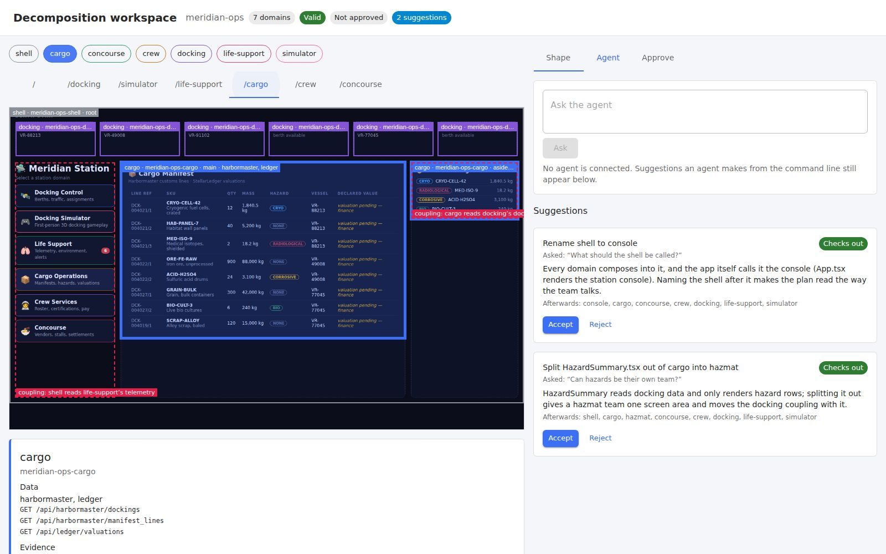
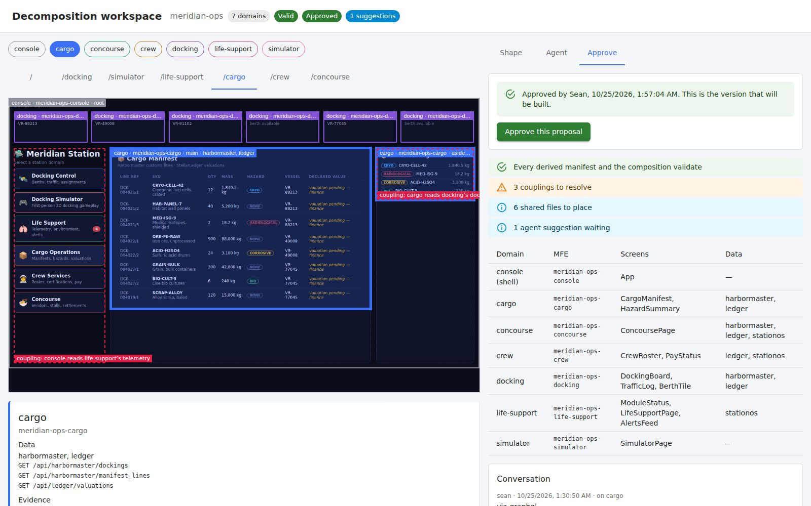

Many products start as a monolith: one codebase that one team builds. As more teams change it,
they block each other. These tools split the monolith into smaller pieces. Each team owns,
changes and releases its own piece. Users see no difference.
This page explains each step and the rules that the step must follow.
Before you start
Terms
Monolith
The existing application that you decompose. It is one codebase that ships as one unit.
Piece
A bounded part of the product that one team owns, changes and releases on its own, for example orders or profile. It ships as one micro-frontend (MFE). The plan and the workspace call it a domain.
Shell
The host application that composes the pieces. It has the header, the navigation and the space where each piece renders.
Screen area
A rendered part of a screen, for example a table, a panel or a card. The capture records it as a region.
Backend
A service that supplies data to the screens.
Data helper
A small service for one piece. It gets the data of that piece from the backends and returns it in one consistent shape. It is a backend for frontend (BFF).
API description
A machine-readable list of what a backend accepts and returns, in OpenAPI format.
Tools
Code that follows fixed rules. The same input always gives the same output. No model runs inside the tools.
Agent
An AI assistant that makes judgment calls, for example a name or a split. It uses the same commands as a person, or it is the hosted model in the workspace. The tools check each result.
The plan
One file, decomposition.yaml. It lists the proposed pieces and the evidence for each. The tools derive everything else from it.
Bundle
The folder of data that steps 1 to 3 produce: the recording, the map of the code, the plan and the screens. Apps and tools read it.
Publish
Send the plan and its evidence to the workspace.
The workspace
The tool where people review, discuss, shape and approve the plan. It runs on the machine of the engineer or as a hosted service. It shows the plan on the real screens. It changes the plan only through named actions. When a person approves, it records the exact version of the plan.
Figure 1 — the steps
Eight steps, and two approvals by people
The order is the order that a careful team follows by hand. First, find out what the app
does. Next, decide where to cut it, and agree on the cuts. Then move one piece at a time.
After each move, check that nothing changed. The tools find, suggest and check. People
approve the cuts. People also approve the finished work.
a person approvestools do the workan agent does the work
Why use a recording and not the old tests? Monoliths rarely have good tests. The recording shows what the app really does.
Who does the work
Tools repeat. An agent helps with judgment. People decide.
Each step has up to three kinds of worker. Tools do the work that must give the same
result every time. An agent helps where the work needs judgment, for example a
name or a split. People make the decisions. The tools check each result of the
agent before it counts.
Steps 1 and 2 need no agent. Step 3 gives the same draft with or without one. The agent
is optional in steps 1 to 4. It does real work in steps 5 and 6.
Step
Tools
Agent
People
1 · Watch the app
Drive the app, record it, and replay it
Can write journeys (optional)
Give the address of the app
2 · Read the code
Parse the code, make the map, sort the tests
None
None
3 · Suggest the pieces
Draft the pieces with fixed rules, score each clue, infer the API descriptions
Can rename, merge and split (optional)
None
4 · People approve
Show the plan, check every change, record the approval
Answers questions with suggestions (optional)
Shape the plan and approve it
5 · Build the pieces
Generate an empty piece and a data helper for each area
Makes the monolith run as one piece
Review
6 · Move the code
Run the checks of the repository
Moves the code and the tests into the new pieces
Review each change
7 · Switch over
Change one placement, run the step 8 check, undo a switch that fails
None
Approve each switch
8 · Prove parity
Replay the journeys and compare
None
Sign off
The rules that keep the agent safe
An agent never writes the files that the platform generates. It writes only the files that developers own.
The tools try each change of the agent on a copy of the plan. They drop a change that breaks the plan and show the reason.
Nothing is built before a person approves the plan.
Each switch in step 7 passes the step 8 check and has its own pull request.
The key for the hosted model comes from the environment only. A person can switch the agent off.
Step 1 — watch the app
Use the app like a person would, and record everything
A browser opens the monolith. It follows short scripts that are called journeys.
An example journey is: open the home page, click Docking, open a berth. The browser also
explores the app alone and follows each link that it finds. At each step it records what
is on the screen, which code drew each part, which data the screen asked for, and any
errors. It also saves a screenshot.
ToolsDrive the app in a browser and record it. The same journeys always give the same recording.
AgentCan write journeys from the route table and the forms. This is optional.
PeopleGive the address of the app. Write journeys if you want to.
How it works
Someone starts the monolith in development mode and gives its address to the tools.
The tools open the app in a browser, like a user. They run each journey. Then they follow links alone.
After each step, the tools write down what the screen shows. They note which code drew each area.
They also write down each question that the screen sent to a backend, and each answer.
They freeze the clock and keep the answers. A later run can then replay the same session.
Example. On the reference app, the capture finds that the docking board and the traffic log both ask the harbormaster backend for docking data.
Goes inThe running monolith, and optional journeys
What happensA browser clicks through the app. The clock is frozen, so dates do not change between runs
Comes outA recording: screens, screen areas, data requests and answers, errors and screenshots
It must
Name the code behind each screen area. Read the labels that React adds in development mode.
Link each data request to the screen area that shows the answer.
Keep each answer. Then the same journeys can run again with the same data and no live backend.
Never press buttons or send forms during exploration. Then the data of the app does not change.
Work with old and new apps. Support different React versions and both kinds of web address (/page and /#/page).
Step 2 — read the code
Find out what reaches what
The recording shows what happened. The code shows everything that can happen,
also on screens that nobody visited. This step reads the code and makes a map. The map
shows which address shows which screen, which files each screen uses, and which data each
screen asks for. It follows each request to the backend address. It also finds data that a
screen uses but does not show. This is a hidden link between areas. A screenshot cannot
show it.
ToolsRead the source code with a parser. The tools do not run the app. The same code always gives the same map.
PeopleNothing to do in this step.
How it works
The tools read each source file and the way that files import each other.
They find the routes. They decide which screen each file belongs to. A file that several screens use is shared.
They find each backend call in the code, also when a helper function hides it.
They match each call in the code to the calls in the recording.
They read the tests. They mark each test keep, rewrite or throw away, and give a reason.
Example. The hazard summary shows no docking data on screen, but the code reads it to filter. The recording cannot see this. The map shows it as a hidden link.
Goes inThe source code of the app, and the recording from step 1
What happensThe tools read the code and do not run it. Then they match the map to the recording
Comes outA map: screens, files, data requests, hidden links, sorted old tests, and who changes what
It must
Explain each data request in the recording. Point to the code that makes it.
Sort the existing tests: keep, rewrite or throw away. Give a reason for each.
Mark a file that several screens use as shared. Do not give it to one screen.
Read the common ways to write apps: JavaScript or TypeScript, old and new routing, and the usual ways to store and get data.
Step 3 — suggest the pieces
Group the files into pieces, and show the reasons
The strongest clue is data. Screens that show the same data usually belong together. The
tools start from the screens of the app. They give each file to the screen that uses it.
They add the files that share the data of a screen. Each suggested piece gets a score for
each clue. A reviewer can see why the line is in this place. The same rules always give
the same answer. This lets people check and repeat the result.
ToolsDraft the pieces with fixed rules. The same evidence always gives the same draft. They also write an API description for each backend.
AgentCan make judgment calls: a name, a merge, a split, a file that the rules cannot place. Each call is a named edit that the tools check. This is optional.
PeopleNothing to do in this step. You review the result in step 4.
How it works
Each screen that fills the main area starts a piece. The files that only that screen uses join it.
The files that only the entry of the app uses form the shell.
A file that is left joins the piece that supplies at least half of the data that it reads.
A file that many pieces use gets a suggestion: split it, copy it, replace it with one data helper for each piece, or remove it.
The tools score each piece on six clues. A reviewer can then see why a line is in this place.
Example. On the reference app, the rules put 26 of 27 files in the correct piece. The agent fixes the last one: it moves the constants file to the console.
The plan is one file. It is the only file that people edit. The tools make everything else from it. So nothing can differ from the plan.
It must
Give each piece the reasons for it, not only a name.
Mark each hidden link as a risk to fix. A hidden link is where one piece reads the data of another piece.
Tell apart an app with one backend and an app that sends requests to several backends.
Check that the tools can build the plan. Each piece must pass the same checks as a piece that people make by hand.
Step 3, continued — data
Give each piece a description of the data it needs
Each new piece gets its own data helper. A data helper needs an API description of each
backend that it uses. Monoliths rarely have one. So the tools write one from the recording.
It has each question that the app asked and each answer that it got. Then the tools compare
it with the code. In this way, questions that the recording missed still show. Each data
helper gets only the questions of its piece. It also gets the recorded answers as sample
data for demonstrations.
It must
Describe only what the app asked, or was written to ask. Do not guess more.
Mark the description as written by the tools. Record the recorded request for each part.
Use the own description of the backend when there is one. Report where the two differ.
Step 4 — people approve
Publish to the workspace, then review, discuss and approve
Steps 1 to 3 produce a bundle of data: the recording, the map of the code and the plan.
Apps and tools read this bundle. The workspace is one such app. The engineer publishes the
plan and its evidence to the workspace. People then agree on the plan there.
The workspace runs on the machine of the engineer, or as a hosted service. The screen is the
same in both. It shows the plan on the real screens, with a coloured box around each piece.
People read the evidence and change the plan. They merge, split and rename pieces and move
files. They discuss the plan in comments and with the agent. Then they approve. One tool
holds the review, the conversation and the decision.
The workspace keeps no data of its own. Each action is a named action, so the tools check it
at once, and everything that depends on it moves too. The changes of people return to the
repository, and the tools check each one again. The plan file stays the only record. It
also holds the comments, the questions and the approval.
The AI agent works in the same screen. A person can ask a question, for example "split
hazards out of cargo". The agent answers with suggested changes. The tools try each
suggestion on a copy of the plan. If a suggestion breaks the plan, the tools drop it and
show the reason. The other suggestions wait until a person accepts them. The agent is a
hosted model. It uses the coder plugin of the platform and an API key that the engineer
sets. Without a key, the rest of the workspace works in the same way.
ToolsShow the plan on the real screens. Check every change at once. Record the approval.
AgentAnswers a question with suggested changes. A person accepts or rejects each one. This is optional.
PeopleShape the plan and approve it. This is the main step for a product owner.
How it works
The engineer publishes the plan and the evidence to the workspace.
You open the workspace. You see each screen of the app with a box around each piece.
You click a piece. You see its data, its files, and the reasons for its boundary.
You change the plan: rename a piece, merge two, split one, or move a file. The tools check each change at once.
You can ask the agent, for example "split hazards out of cargo". The tools try each suggestion on a copy. You accept or reject it.
You approve. The tools record who approved, when, and which version. A later change to the pieces makes the approval out of date.
Example. You rename the shell to console and approve. The name changes in every chip, box and label, and the approval names that version.
The engineer publishes. People change the plan in the workspace, and the changes return to
the repository. The review package shows the plan to people who are outside the workspace,
for example in a pull request or in Figma. In the package, each piece has its own colour.
Each box shows the name of the piece, its position on the screen and its backends. A
dashed red box shows a hidden link, where one piece reads the data of another piece.
On the machine of the engineer, one command opens the workspace:
decompose:workspace. A hosted workspace takes a published snapshot of the plan
and the evidence. The screen and the actions are the same. The workspace is also one of the
pieces that the platform builds. It is a generated MFE with four screen areas (the map,
shaping, the agent and approval) and its own data helper.

The workspace on the reference app. The map shows the real cargo screen with each piece outlined. The panel below the map explains the boundary of cargo. On the right are two suggestions from the agent. Each suggestion names the question that it answers and gives its reasons. A green badge shows that the tools tried the suggestion on a copy of the plan and that it works. Nothing changes until a person presses Accept.

After the rename is accepted and the plan is approved. The shell is called console in the chips, on the map and in the hidden-link label. The approval shows who approved it and when. The open risks are above the table of pieces. The approval also saved the plan to the history of the project, so the change request has it.
It must
Publish the plan and its evidence as one snapshot. The snapshot names the version of the plan.
Show each suggested piece on at least one real screen. Warn about each piece that no screen shows.
Keep no data of its own. After a reload, in a second tab or after a restart, the workspace shows the same plan.
Change the plan only through the named actions. Refuse an invalid change and give the reason.
Keep the conversation with the decision. Store comments, questions and answers in the plan.
Hold each agent suggestion until a person accepts or rejects it. Show if the suggestion still works.
Record who approved, when, and the exact version of the plan. A later change to the pieces makes the approval out of date. A comment does not.
Return the changes of people to the repository. Check each change again.
Treat the approval of the plan as the decision. Do not build anything before it.
Make the review package without the internet. The Figma page has its own screenshots.
Work the same on the machine of the engineer and as a hosted service.
Figure 4 — Figma
Turn any running screen into an editable Figma design
The tools can also turn any screen of a running app into an editable Figma design. This is
separate from the review boxes. The design has frames, text and shapes. It is not a flat
picture. Designers start from what is live and not from an old mock-up. It works on any web
app, split or not.
All design choices are in the middle stage. So each rule can be tested without a browser or Figma. The rule is: if Figma cannot show a thing exactly, keep the look correct. Do not make it editable but wrong.
It must
Include only what you can see on the screen. Include the content inside reusable web components.
Use Figma auto-layout only where it matches the page exactly. In other places, keep the exact positions.
Report what the tools could not copy. A gradient becomes a plain colour. Only the first shadow stays. Video, canvas and embedded frames become labelled placeholders.
Steps 5 to 7 — build, move, switch over
Move one piece at a time, with the monolith still running
The tools do not replace all pieces at once. First, they wrap the whole monolith as one
piece. The new shell then shows it unchanged. Then, one screen area at a time, the tools
point that area at its new piece and not at the monolith. After each switch, step 8 checks
that nothing changed. If something changed, the tools undo that one switch.
ToolsGenerate the empty pieces. Change one placement at a time. Run the step 8 check. Undo a switch that fails.
AgentMakes the monolith run as one piece. Moves the code and the tests into the new pieces. It writes only the files that developers own.
PeopleReview and approve each pull request.
Step 5 · how it works
The tools read the approved plan. They generate an empty piece and a data helper for each area.
An agent changes the build of the monolith, so that the monolith also runs as one piece in the new shell.
The tools write a composition that places the monolith everywhere. At first, users see no difference.
Example. After this step, the shell shows the monolith as before. The new pieces exist but show nothing yet.
Step 6 · how it works
For one area, the agent moves its screens into the new piece.
The tests that are marked keep move with the screens. The agent writes new tests for the tests that are marked rewrite.
The agent never edits a generated file. The tools run the checks of the repository on the result.
Example. The cargo screens move into the cargo piece. The shell still shows the monolith.
Step 7 · how it works
The tools change one rule in the composition. The rule now places the new piece, and not the monolith, in one screen area.
They run the step 8 check against the recording.
If the check passes, the change goes into its own pull request. A person approves it. If it fails, the tools undo that one switch.
Example. The cargo manifest area now shows the cargo piece. Users see the same screen.
Step 5 · buildAn empty piece and data helper for each area in the plan. The monolith is also one piece. At first, each screen still shows the monolith.
Step 6 · moveThe code of each screen and the tests that are marked keep move into its piece. Tests that are marked rewrite get new tests that check behaviour.
Step 7 · switch overOne screen area at a time moves from the monolith to its new piece. Each switch is its own small change for review.
It must
Keep the product working at all times. Users must see no difference during the work.
Never switch more than one screen area without a pass of the step 8 check.
Write only into the parts of each piece that developers own. Never write over files that the platform generates.
Figure 5 — step 8, check nothing changed
Replay the same journeys and compare
The check takes the recording from step 1. It replays the journeys against the new version.
It uses the same frozen clock and the same recorded answers, so the data cannot differ. It
compares the two runs screen by screen. First, run it against the monolith. This proves that
the journeys give the same result each time. After that, any difference means that the app
changed.
ToolsReplay the journeys and compare. The same journeys and the same data give the same verdict.
PeopleSign off at the end.
How it works
The tools run the check on the monolith alone first. It must pass against itself.
They replay the journeys of step 1 against the new version, with the same frozen clock and the same recorded answers.
On each screen they compare four things: what is shown, which data is asked for, new errors, and how it looks.
They write a report: the same, or exactly what changed and in which screen area.
Example. On the reference app, a change of one heading colour fails every step. The report names the area that drew it.
The check matches screen areas by what they are, not by the file that draws them. After the split, new files draw the same parts. The check still finds them.
It must
Pass against the monolith itself before it judges a new version.
Report a change once, in the screen area that caused it. Do not report it in each area around it.
Allow no visual difference unless a person sets an allowance on purpose.
Name what the journeys never visited. Then nobody mistakes "not checked" for "unchanged".
Does it work?
Tested on our own app, and on two apps that we did not write
The short answer
On our reference app, which we built to split, the tools found the seven planned pieces.
They also tested two unrelated public versions of the same blogging product. Different
people wrote them with different tools. The tools found the same eight pieces
in both. The tools explained each data request in both. Both passed the step 8 check against
themselves. The two outside apps showed sixteen gaps that the reference app could not show.
We fixed all sixteen.
Finding your way
Ask where you are, and get the next command
Eight steps and a dozen commands are much to remember. On the first run against the
reference app, a user made five wrong turns before a plan. Now one command reads the
evidence folder. It shows which steps are done and which are out of date because an
earlier step changed. It shows which steps wait for a person. It also gives the exact next
command, with the address and folder of the app already filled in.
$ seans-mfe-tool flow:status ./evidence
✓ Run the app and record what it does
✓ Read the app's source, joined to the capture
✓ Propose the domains
○ Shape the proposal — merge, split, rename, ask the agent — 1 suggestion waiting
↻ Write the review package — proposal/decomposition.yaml changed since proposal/PROPOSAL.md was built
✓ Approve the proposal — approved by Sean
next: seans-mfe-tool decompose:present ./evidence/proposal
The command keeps no record. Each time, it reads the files on disk. Each step stores the
versions of the inputs that it used. So "out of date" means that the inputs really changed.
A change of branch changes only file dates and cannot cause it. The order of the steps is
written once, as data, in flows/decompose.yaml (PDR-012, ADR-119).